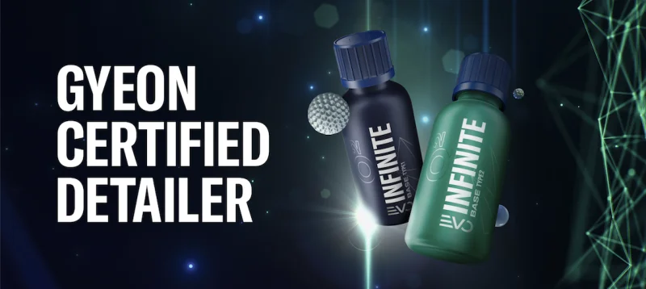

Protection longue durée
Protection céramique à Nancy
Centre studio certifié GYEON. Préservez l'éclat de votre véhicule avec le pack GYEON Expérience. Garantie à vie sur le Q2 INFINITE EVO.
Partenaire GYEON certifié
La céramique ultime pour votre véhicule
Swag Auto s'est associé à GYEON.CO afin de vous proposer plusieurs solutions pour protéger votre auto avec différentes garanties :
- Q2 WAXLa cire hybride — protection de quelques mois, idéale pour la vente d'un véhicule.
- Q2 CANCOAT EVOLa protection céramique garantie 2 ans — idéale pour ceux qui changent régulièrement de véhicule.
- GYEON Q² INFINITE EVONotre exclusivité ! Représente le plus haut de gamme de la marque. Garantie à vie (sous conditions). Destiné uniquement aux préparateurs certifiés GYEON France dont Swag Auto fait partie.
Swag Auto aura forcément une offre adaptée à vos attentes et votre budget. Venez découvrir la gamme GYEON dans notre showroom.
Demandez un devis gratuit
Notre processus
Les étapes de votre traitement céramique
Lavage
Nettoyage intégral à la main selon la méthode traditionnelle, suivi d'une étape de décontamination complète pour préparer la surface.
Polissage
Correction de 95 % des défauts du vernis — rayures et micro-rayures effacées par polissage machine professionnel avant application.
Céramique
Revêtement protecteur nano-céramique GYEON. Protection hydrophobe qui repousse l'eau et les contaminants, tout en facilitant le nettoyage.
Brillance & Durabilité
Pourquoi choisir la protection céramique ?
Durabilité exceptionnelle
Jusqu'à plusieurs années de protection contre les agressions extérieures : UV, goudrons, fientes, lavages répétés.
Facilité d'entretien
La saleté et l'eau adhèrent moins à votre carrosserie. Votre voiture reste propre plus longtemps, les lavages sont facilités.
Rendu esthétique premium
Un éclat profond et durable, avec un effet "voiture neuve" impressionnant. Surface lisse, éclatante et protégée durablement.